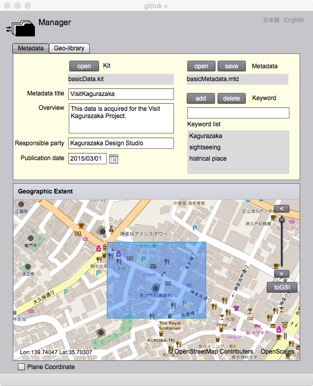
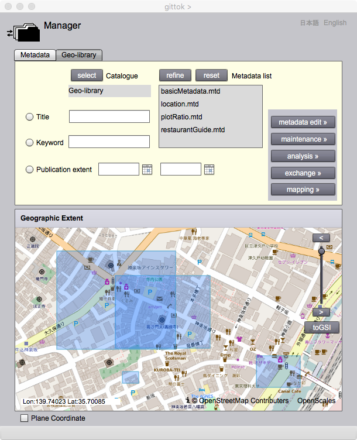

Manager
It will be difficult to see how and why kits are produced if many kits are produced and stored in the storage. However, it will be possible to retrieve, reuse and update kits if metadata (data about data [ISO 19115:2003 - Metadata]) are made and managed in the special folder called geo-library or geo-catalog. Practically, the geo-libraries are established on the web (e.g., GoGeo). Originally geo-library was called geospatial data clearinghouse as a distributed network of geospatial data producers, managers, and users linked electorionically [Executive Order 12906 Coordinating Geographic Data Acquisition and Access: The National Spatial Data Infrastructure, April 11, 1994]. The geo-library in gittok is a local mechanizum of management and acess to dataset using metadata. Gittok metadata consists of metadata title, overview, responsble party, publication date, keywords and geographical extent. The importance of metadata can be recongized enough even its structure is much simplar than international metadata standard.
Manager provides two functions, one is metadata editor, the other is geo-library.
Metadata editor

Figure 1. Metadata editor in Magamer
Fields
Kit
The name of the kit which is explained by the metadata.
Metadata
The name of the metadata which explains the kit.
Metadata title (editable)
The title of metadata is keyed-in here.
Overview (editable)
The short introduction to the metadata is keyed-in here.
Responsible party (editable)
Organization or person having responsibility to the kit is keyed-in here.
Publication date (editable)
Publishing date of the kit is keyed-in here.
Keywords (editable)
Keywords are added in Keyword list by clicking "add" button after key-in the keyword for the kit.
Geographic Extent
Geographic extents of kits are displayed on the index map.
Buttons
open (Kit)
Kit can be opened by clicking this button.
open (Metadata)
Metadata can be opened by clicking this button.
save (Metadata)
Metadata can be saved by clicking this button.
add (Keyword)
Keywords can be added by clicking this button.
delete (Keyword)
Keyword can be deleted by clicking the button after selecting the word on the list.
<
Index map can be enlarged.
>
Index map can be reduced.
Slider
Map scale can be changed contiguously by moving the button of the slider.
OSM/GSI
Index map can be replaced by clicking this button. OSM is Open Street Map, while GSI is Map tiles provided by Geospatial Information Authority of Japan.
Geo-lbrary

Figure 2. Geo-library in Manager
Fields
Catalogue
A name of the folder which has a set of metadata.
Metadata list (selectable)
A list of metadata included in the catalogue.
Title (editable)
Narrow down of the metadata is possible by clicking refine button after clicking radio button and key-in the title of metadata.
Keyword (editable)
Narrow down of the metadata is possible by clicking refine button after clicking radio button and key-in the keyword of metadata.
Publication extent (editable)
Narrow down of the metadata is possible by clicking refine button after clicking radio button and select beginning and end date on calendars.
Geographic extent (selectable)
Metadata selection is possible by clicking the extent displayed on the index map.
Buttons
select
Selection of the catalogue folder.
refine
Narrow down of the metadata in order to fit the condition selected by radio buttons.
reset
All metadata included in the catalogue are displayed on the list box.
metadata edit
Metadata editor with selected metadata appears by clicking this button.
maintenance
Editor page with the selected kit appears by clicking this button.
analysis
Analyst page with the selected kit appears by clicking this button.
exchange
Exchanger page with the selected kit appears by clicking this button.
mapping
Map editor with selected kit appears by clicking this button.
Title
Narrow down of the metadata is possible by clicking refine button after clicking this button and key-in the title of metadata.
Keyword
Narrow down of the metadata is possible by clicking refine button after clicking this button and key-in the keyword of metadata.
Publication extent
Narrow down of the metadata is possible by clicking refine button after clicking this button and select beginning and end date on calendars.
<
Index map can be enlarged.
>
Index map can be reduced.
Slider
Map scale can be changed contiguously by moving the button of the slider.
OSM/GSI
Index map can be replaced by clicking this button. OSM is Open Street Map, while GSI is Map tiles provided by Geospatial Information Authority of Japan.
日本語
You can read the tutorial written in Japanese.
English
You can read this page.